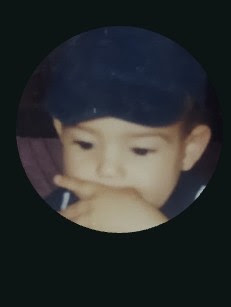

Desenvolvedor & Estudante de Engenharia

Eu sei que você pensou: “droga, é o Braia”. E sim, eu também sou muito bom no drift.
Mas, fora das ruas e das corridas de carro, uma das coisas que mais gosto de fazer é explorar algum universo, físico ou não, completamente aleatório. Gosto de aprender, conhecer coisas diferentes e, principalmente, sair um pouco daquilo que já conheço. Talvez por isso eu tenha ganhado outro apelido: Enciclopédia.
Nos últimos tempos, também descobri que gosto bastante de atividade física. Atualmente corro e faço musculação (quando dá, rs), mas a lista de coisas que ainda quero experimentar é consideravelmente maior: Muay Thai, natação, voltar a jogar futebol, fazer trilhas, viajar e, eventualmente, aprender a tocar todos os instrumentos musicais do mundo. Eu avisei que era eclético.
Profissionalmente, estou quase lá: 8º período de Engenharia de Computação e atuando como trainee em Engenharia de Software.
Meu trabalho acaba passando por várias etapas do desenvolvimento de uma solução. Participo desde a análise de requisitos, modelagem e arquitetura de classes até integrações com plataformas externas, consumo e desenvolvimento de APIs, automações, chatbots e outras demandas que aparecem no caminho.
Atualmente, trabalho em projetos para uma universidade com sede em São Paulo e presença em diversas regiões do Brasil e também fora dele. É um ambiente que me permite ter contato não só com código, mas principalmente com o problema que estamos tentando resolver — e é justamente essa parte que mais gosto.
Como se trabalhar e cursar Engenharia de Computação já não ocupasse tempo suficiente, também participo de um projeto de extensão em que desenvolvemos uma solução para uma ONG.
Nesse projeto, estou trabalhando principalmente com Python, Flask e PostgreSQL. Até aqui, participei da implementação da autenticação de usuários com JWT, da definição de permissões e visualizações com base no perfil do usuário e de uma refatoração importante na forma como validamos os dados do sistema.
Antes, tínhamos praticamente uma única classe responsável por validar tudo: CPF, nome, e-mail, objetos, cursos, disciplinas... enfim, quase o sistema inteiro. A solução foi migrar para uma estrutura baseada em schemas, o que acabou puxando uma refatoração considerável das rotas e da organização do backend.
Além disso, tenho experiência com consumo de APIs, Docker, hospedagem de aplicações em servidores, otimização de buscas e algumas noções de segurança — incluindo cursos que fiz pela Cisco.
Acho que estou vivendo aquele dilema clássico dos vinte e poucos anos: tentar trabalhar, estudar ao máximo, construir uma carreira e, ao mesmo tempo, lembrar que existe um mundo inteiro fora da tela do computador.
Quero continuar aprendendo cada vez mais, não só para me tornar um engenheiro melhor, mas para continuar sendo uma pessoa curiosa.
Porque, no fim, acho que é isso que mais me define: eu gosto de entender como as coisas funcionam — e, quando descubro alguma coisa nova, normalmente já quero entender outra.